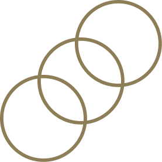
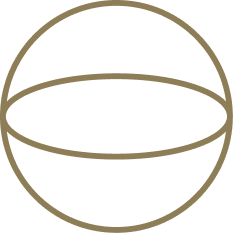
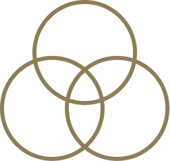
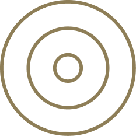

Referencia visual del sistema de marca de Savvy Wealth: paleta, tipografía, espaciado, componentes de UI y el motivo circular que atraviesa cada pieza. Editorial, mínimo, premium — nunca genérico.
Tipografía primariaDiatype (web: Inter)
Tipografía secundariaBig Caslon (web: Georgia)
AudienciaAdvisor-facing · End-client
MotivoCírculos superpuestos, trazo fino
Paleta de color
5 primarios · 8 secundarios · 8 grises de producto
Primarios — la base, hacen la mayor parte del trabajo
White
#FFFFFF
Fondos, texto sobre oscuro
Vanilla
#FFF8F1
Fondos cálidos, cards
Ecru
#C7BCA1
Acentos sutiles, motivo circular sobre claro
Savvy Gold
#8E7E57
Acento, texto secundario, CTAs sobre claro
Black
#000000
Fondos hero, texto primario
Secundarios — vibrantes, uso selectivo
Deep Green
#175242
Advisor-facing, confianza, autoridad
Deep Blue / Teal
#095972
Momentos de plataforma / tech
Golden Yellow
#D79F32
Calidez end-client, stats
Maroon
#6B484D
Editorial, thought leadership
Lavender
#A98EB1
Momentos de marca más suaves
Red
#B63D35
Alertas, CTAs urgentes (uso limitado)
Peach
#F19E70
Acentos editoriales cálidos
Dusty Rose
#C06F74
Slides narrativos secundarios
Grises de producto — solo UI, nunca marketing
#767676
#A3A3A3
#D0D0D0
#ECECEC
#89837C
#B2AAA1
#D3CDC4
#F5F2EC
Color stories — mood → paleta
Premium / Editorial
Fondo negro + texto blanco + círculos ecru
Warm / Human
Fondo vanilla + texto negro + acentos gold
Authoritative / Advisor
Fondo deep green + texto blanco + acentos ecru
Platform / Tech
Fondo teal + texto blanco + círculos claros
End-Client Warmth
Fondo golden yellow + texto negro/blanco
Thought Leadership
Fondo maroon + texto blanco
Escala tipográfica
Diatype (Inter) + Big Caslon (Georgia)
Display
Light · -4% tracking · 100% leading
Your real-time picture.
Headline sans
Light · -1% tracking · 105% leading
Independence, reinvented.
Headline serif
Bold · +2% tracking · 105% leading
Independence, reinvented.
Body copy
Regular · 18pt · 150% leading
Un socio de confianza para asesores financieros independientes — combinando infraestructura, servicio excepcional y herramientas inteligentes.
Caption
Regular · 12pt · +7% tracking · ALL CAPS
Advisor-facing · Powered by Savvy
CTA
Regular · 18pt · +2% tracking
Book a demo
Firma tipográfica
El movimiento característico de Savvy: mezclar Diatype Light (sans) y Big Caslon Bold (serif) dentro del mismo titular — una palabra clave en serif, el resto en sans. Siempre en minúsculas de oración, nunca en Title Case.
Escala de espaciado
6 pasos
--space-xs
8px
--space-sm
16px
--space-md
32px
--space-lg
64px
--space-xl
120px
--space-2xl
160px
Padding vertical de sección: 120–160px en desktop, reducido a 48–64px en mobile. El espacio es un elemento de diseño — nunca llenar cada pixel.
Componentes de UI
Botones · formularios · cards · badges
Botones
Primario — pill rellena, deep green + blanco
Secundario — pill outline, negro/blanco según tema
Formulario
Cards
Dato de ejemplo
2.4x
Crecimiento promedio de AUM en el primer año — patrón "Stat Post"
Contenido de ejemplo, no un testimonio real
"Recuperé el tiempo que antes perdía en operaciones — ahora lo paso con mis clientes."
Advisor de ejemplo
Independent RIA
Badges / etiquetas
Advisor-facingEnd-clientPlatformEditorialUrgente
Iconografía
Simple, abstracta, basada en geometría circular. Trazo fino (1–2pt), nunca rellenos decorativos. Assets reales del sistema de marca:

Círculos superpuestos

Órbita

Red / conexión

Concéntrico
Motivo circular
Elemento decorativo primario
Círculos superpuestos, trazo 1–2pt, solo contorno — nunca relleno. Escala grande, a menudo recortados fuera del canvas.
Color: coincide con el tono del fondo (círculos blancos sobre oscuro, círculos ecru sobre vanilla). Posición: típicamente alineado a la derecha, parcialmente recortado. Múltiples tamaños pueden superponerse para sugerir profundidad y conexión.
Dirección fotográfica
Calidez, calidad tipo película. Locaciones mínimas y despejadas. Sujetos sobre fondos de tonos madera cálidos. Retratos de advisors: casuales, con confianza. Nunca energía de stock photo.
Voz & vocabulario
6 pilares de mensajería
Pilares de mensajería
Independencia con propiedad
Propiedad real del negocio, los clientes y el futuro económico
Más tiempo para lo que importa
Recuperar tiempo; una plataforma reemplaza un mosaico de herramientas
Personas de clase mundial, herramientas inteligentes
Expertise humano + IA moderna
Base de confianza para tus clientes
Custodia de nivel institucional, Fidelity/Schwab
Comunidad de advisors excepcionales
Red colaborativa, éxitos compartidos
Ecosistema financiero conectado
Visión: una plataforma unificada a futuro
Vocabulario
Usar
Por qué
Powered by Savvy
Co-marca suave, no eclipsa al advisor
Partner with Savvy
Enfatiza la independencia del advisor
Technology-enabled RIA
Explicación introductoria de qué es Savvy
End-client
Etiqueta correcta para los clientes del advisor
AI-native
IA de fondo que da leverage a los advisors
Evitar
Por qué no
Savvy clients
Incorrecto — los advisors son dueños de la relación
Fully automated advice
Contradice el valor humano + tech
Disruption / disruptive
Desalineado con el tono advisor-first
Software company
Presenta a Savvy como una empresa SaaS
Frases de cierre
Onward and upward.Grateful to be your trusted partner.Let's build the future advisors deserve.